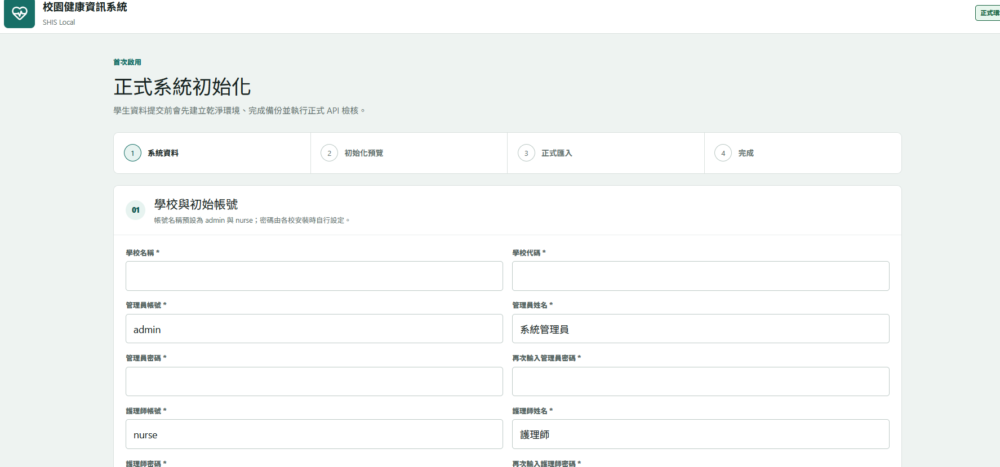
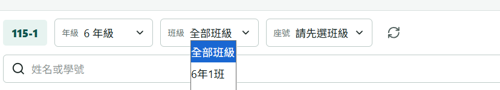
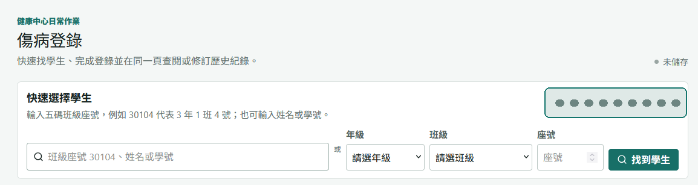
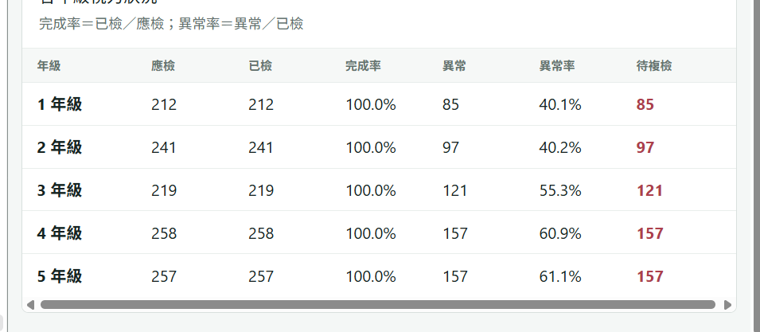
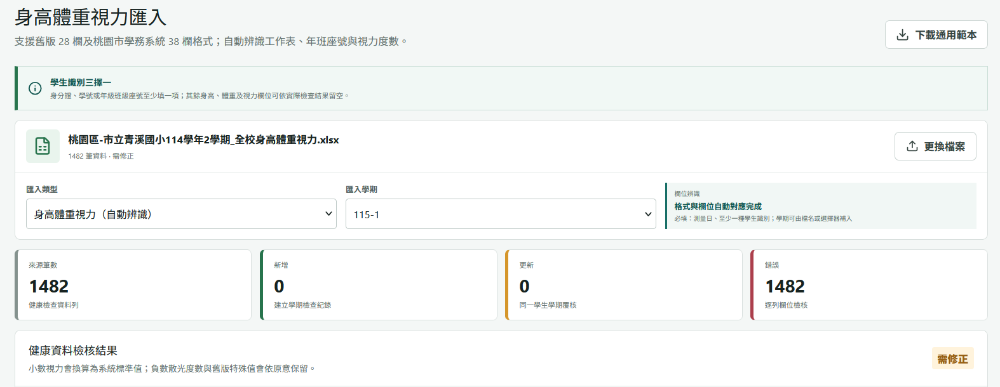
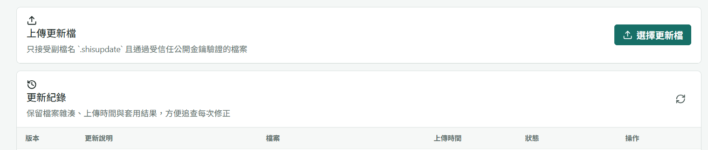

校園健康中心工作手冊
學生健康資訊系統操作手冊
依護理師實際工作順序整理，涵蓋學生查詢、傷病登錄、追蹤、報表、資料匯入、備份與系統更新。
適用版本：1.2.31
更新日期：2026-08-13
圖片：已移除或遮蔽個資
開發者：桃園市青溪國小 黃志豪
- 填寫學校資料輸入學校名稱、學校代碼與初始學期。
- 建立兩種帳號設定管理員與護理師帳號，兩次輸入密碼確認。
- 確認初始化預覽核對學校、學期與帳號資料後再執行。
- 完成首次備份初始化完成後確認系統已建立第一份備份。

初始化畫面不需要先匯入正式學生名冊；完成初始化後再由資料匯入功能處理。
密碼安全首次登入若系統要求變更密碼，完成後會回到工作台。請勿共用管理員帳號。
1確認學期查看頂端目前學期
2找到學生輸入班級座號或學號
3完成登錄勾選部位、分類與處置
4追蹤處理補印通知或查看今日紀錄
緊急處理
直接開啟「傷病登錄」，輸入五碼班級座號，例如 30104。
查詢既有紀錄
開啟「傷病紀錄查詢」，可依日期、班級、學生或待追蹤篩選。
管理追蹤工作
從工作台查看今日傷病、連續受傷、通知與待追蹤項目。
先選年級，再選班級與座號；也可以直接輸入姓名或學號。點選學生後，詳細資料會移到畫面可見位置，避免拉到頁面最下方。

截圖只保留篩選控制；學生姓名、學號與生日清單未收錄在手冊中。
學期名冊
- 每學期重新匯入完整名冊。
- 身分證或居留證號作為學生主檔識別。
- 學號、班級與座號可隨學期更新。
轉出與畢業
- 新名冊未出現者先交由護理人員確認。
- 轉出或畢業採封存，不刪除健康歷史。
- 學生轉回時可重新啟用並加入新班級。

可輸入五碼班級座號，例如 30104 代表 3 年 1 班 4 號，也可分別選擇年級、班級與座號。
- 選擇學生使用班級座號、姓名或學號搜尋；確認同頁的家庭聯絡與健康提醒。
- 事件資訊填寫發生時間與地點；觀察時間、生命徵象皆為選填。
- 勾選分類依序選擇受傷部位、外傷或內科症狀，可同時勾選多項。
- 記錄處置至少選擇一項處置；用藥、送醫或其他處置需補充說明。
- 完成或列印可完成紀錄後回工作台，或直接完成並輸出通知單。
修改紀錄在「傷病紀錄查詢」選擇一筆紀錄並按修訂，系統會回到原傷病登錄頁帶入原資料。健康資料不直接刪除，只能修訂或作廢。
個人疾病史查詢、新增、修訂、匯入、匯出照護指示與病況說明屬敏感資料
重大傷病資料依班級與疾病類型管理保留歷史，不以刪除方式處理
身心障礙手冊可逐筆選擇匯入歷史畢業生預設不勾選
傷病登錄選到學生後，具權限者可在同一頁查看重要健康提醒與照護資訊。不具權限帳號無法從 API、匯出檔或網址繞過限制。
傷病報表
- 日、週、月與學期範圍。
- 月份、地點、年級、類型與處置分析。
- 連續受傷學生與高風險地點警示。
健康分析
- 視力異常與複檢完成率。
- 身高、體重與 BMI 分布。
- 未檢、缺漏、重複與異常值檢核。

「待複檢」代表視力異常但尚未登錄複檢結果；點選人數可查看學生明細。
匯出前先預覽通知單、Excel 與 PDF 輸出前先確認學期與範圍；敏感匯出需重新驗證本人密碼。
1選擇檔案.xls、.xlsx 或 .csv
2欄位辨識確認學期與資料類型
3逐列檢核錯誤列不會寫入
4勾選資料全選或逐筆選擇
5確認匯入重新驗證後執行

畫面只保留匯入設定與彙總數字，學生姓名、學號與個別健康數值已從圖片移除。
學生名冊
支援網站 17 欄格式與桃園市學務系統匯出名冊；新名冊缺少的既有學生會列入待確認。
身高體重視力
可匯入桃園格式，亦可匯出 14 欄舊式 Excel，畫面明確標示「提供桃園學務系統匯入使用」。
歷史學生資料舊學期、轉出或畢業學生資料可逐筆勾選成為歷史封存紀錄，不會加入目前在學名冊。
帳號與權限人員異動時管理員與護理師使用不同帳號
資料備份每日自動、重大操作前定期複製至另一顆磁碟或 NAS
資料還原僅故障或移轉時先預覽範圍並重新驗證密碼
系統更新收到正式更新檔時只接受已簽章的 .shisupdate

套用更新前會先驗證簽章並備份資料；程式更新不覆蓋 PostgreSQL 學生與健康資料。
- 上傳更新檔選擇副檔名為 .shisupdate 的正式檔案。
- 核對版本與說明確認檔案已驗證、最低版本與檔案數量合理。
- 套用更新重新輸入管理員密碼；服務短暫重新啟動。
- 確認結果重新整理畫面，檢查目前版本與狀態是否完成。
不得出現在公開畫面姓名、身分證或居留證號、學號、生日、電話、地址、家長姓名、班級座號與可識別健康內容。
截圖處理方式優先裁除資料列；無法裁除時以不透明色塊覆蓋原始像素，不只使用模糊效果。
發布前複核放大圖片檢查文字、檔名、瀏覽器網址、提示訊息與背景區域，不得殘留可辨識資訊。
本手冊狀態收錄圖片已裁除或遮蔽直接識別資料；資料夾內未放入原始未遮蔽截圖。
10Developer & Copyright
開發者介紹與著作權
黃
系統開發者／設計者
桃園市青溪國小 黃志豪
Qingxi Elementary School - Gavin Huang
本系統的功能概念與傷病處理流程，延伸自原有傷病系統及校園健康中心既有作業需求；開發者負責將需求轉化為可在校內主機獨立運作的程式，完成程式實作、安裝部署、備份還原與更新機制。
01貼近護理現場
縮短學生查找與傷病登錄步驟，讓重要健康提醒、家庭聯絡及歷史紀錄在需要時清楚呈現。
02資料由學校掌握
採校內主機與 PostgreSQL，支援備份、還原、移轉及離線更新，避免日常作業依賴外部雲端服務。
03安全且可追溯
以帳號權限、敏感資料遮罩、重新驗證與稽核紀錄保護學生個資及健康資訊。
04持續維護改善
透過簽章更新檔修正錯誤與增加功能，更新程式時保留各校既有資料與設定。
學生健康資訊系統（SHIS Local）的程式部分，由桃園市青溪國小黃志豪自行開發。
功能概念來源說明本系統的功能概念、傷病登錄流程、健康中心業務方法與資料欄位，係延伸原有傷病系統及既有校務需求；開發者不主張對上述概念、流程、方法或原有系統功能享有著作權。
開發者主張的著作權範圍，限於自行完成且具原創性的原始程式碼、目的碼、程式模組及其具體程式表達。著作人依法享有姓名表示權；使用、部署、備份、移轉或依法修改該程式時，應保留合理且清楚的程式開發者署名。
允許的校務使用
- 為校務與學生健康管理目的安裝及操作程式。
- 依系統功能進行資料備份、還原與主機移轉。
- 使用正式更新檔進行錯誤修正與功能升級。
- 依授權範圍保存必要的程式備份。
程式部分未經授權不得進行
- 移除、遮蔽或竄改程式開發者署名。
- 冒用自己或第三人名義宣稱為程式原始開發者。
- 未經同意重製、改作、公開傳輸或散布自行開發的程式碼或編譯程式。
- 除法律明文允許外，以反編譯等方式複製或改作受保護的具體程式表達。
學生資料：各校匯入及建立的學生、家庭與健康資料，不因使用本系統而移轉給開發者，仍由使用學校依個人資料保護及校務規範管理。
第三方元件：第三方套件、開放原始碼程式及原有系統內容不屬於開發者的程式著作權範圍，分別適用原權利人或原授權條款。
權利範圍：本聲明不限制他人以自己的程式表達實現相同或類似功能。實際著作權與授權關係仍以中華民國著作權法、任職關係、契約及個別授權文件為準。
© 2026 桃園市青溪國小 黃志豪。保留所有權利。
其他電腦無法連線
確認主機服務已啟動、網址使用主機固定 IP 與 3000 連接埠，並檢查 Windows 防火牆允許校內子網路連入。
畫面顯示沒有權限
確認目前登入帳號角色；護理師不應看到帳號管理、系統設定、備份還原或系統更新等管理功能。
匯入資料全部顯示錯誤
先確認匯入學期、檔案格式與學生名冊是否一致。錯誤列不會寫入，可修正共同原因後重新檢核。
更新長時間停在已排程
服務更新時可能短暫無法連線。等待數分鐘後重新整理；若仍未完成，由管理員查看更新紀錄與安裝記錄。
日期、姓名或中文字顯示異常
確認使用支援 UTF-8 的新版瀏覽器。Excel 匯入請避免以文字編輯器改存造成編碼或日期型態變化。
文件資訊
- 開發者
- 桃園市青溪國小 黃志豪
- 英文署名
- Qingxi Elementary School - Gavin Huang
- 手冊版本
- 1.2
- 對應系統
- SHIS Local 1.2.31
- 開發性質
- 功能概念延伸既有傷病系統；程式部分由開發者自行開發
- 發布用途
- 校內離線使用與協作平台操作說明
找不到符合的章節，請更換搜尋文字。